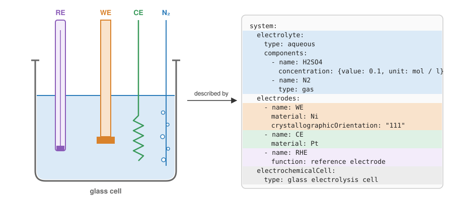

echemdb metadata-schema
The metadata-schema repository provides standardized metadata schemas to describe electrochemical systems and the collected data. The mdstools Python package allows generating, validating and working with them.
This project is part of the echemdb community project.

Schemas for describing electrochemical data: electrodes, electrolytes, cells, the experimental setup, the data source and its curation. With the schema reference, example files and JSON Schema downloads.
How the schemas are generated from LinkML, and how to flatten, enrich, validate and migrate metadata with mdstools. With installation, usage and the API reference.
JSON Schemas (v0.9.0)
The following JSON Schema files can be used to validate metadata in any language or tool that supports JSON Schema:
Schema |
Download |
|---|---|
Autotag |
|
Minimum echemdb |
|
Source Data |
|
SVG Digitizer |
|
echemdb Package |
|
SVG Digitizer Package |